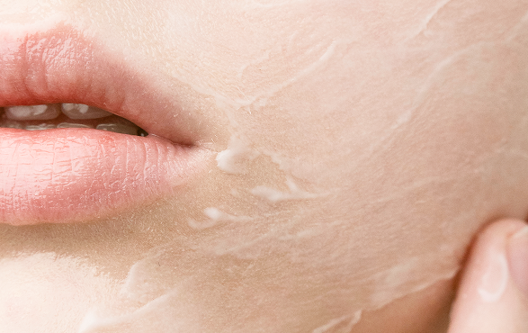

Skincare
base
Un equilibrio tra cura, benessere e amore verso te stessa.
La skincare non è una moda — è una pratica quotidiana che protegge la salute della pelle nel tempo. Non serve una routine complicata: bastano pochi passi costanti e prodotti adatti al proprio tipo di pelle.
Segui i tre step fondamentali
Detersione
Rimuove impurità, sebo in eccesso e residui di trucco senza alterare il film idrolipidico della pelle. È il punto di partenza indispensabile per qualsiasi routine.
Consiglio: usa un detergente delicato in gel o in mousse. Risciacqua con acqua tiepida, mai calda.
Idratazione
Nutre la pelle e ripristina il corretto equilibrio idrico. Va applicata ogni giorno, anche se la pelle è grassa.
Consiglio: applica su pelle ancora umida per massimizzare l'assorbimento degli attivi.
Protezione
La protezione solare è lo step più importante della routine mattutina. I raggi UVA e UVB agiscono anche attraverso le nuvole e i vetri.
Consiglio: usa sempre SPF 30 o 50+, anche d'inverno e nei giorni nuvolosi.

Ad ogni tipo di pelle la sua Skincare Routine
Avere una bella pelle non è solo una questione di DNA, ma le tue abitudini quotidiane hanno un grande impatto su ciò che vedi allo specchio.
Sul lungo termine la tua pelle ne trarrà vantaggio. I tipi di pelle variano molto ed ognuna ha le sue specifiche caratteristiche: normale, secca, mista, grassa, sensibile o acneica. A seconda di quale sia la tua pelle dovrai usare una particolare routine ben studiata.
Prendersi cura
nel profondo
Dall'idratazione profonda all'anti-età scopri i trattamenti più efficaci per ogni esigenza cutanea.